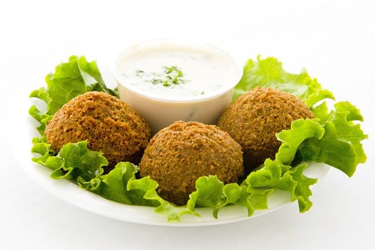

.jpg )
Prato de Comida

Prato de Falafel
Culinária de ficção refere-se à comida e bebida imaginárias, muitas vezes presentes em livros, filmes e séries, que não são necessariamente inspiradas em receitas reais, mas sim em criações de mundo ou elementos mágicos.
Prato de Comida
Prato de Falafel
| Receita | Dificuldade | Tempo de Preparo |
|---|---|---|
| Pudim | Média | 1 hora e 30 minutos |
| Bolo | Fácil | 35 m |
| Arroz | Fácil | 8 m |